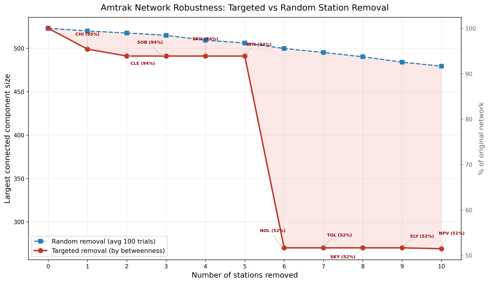
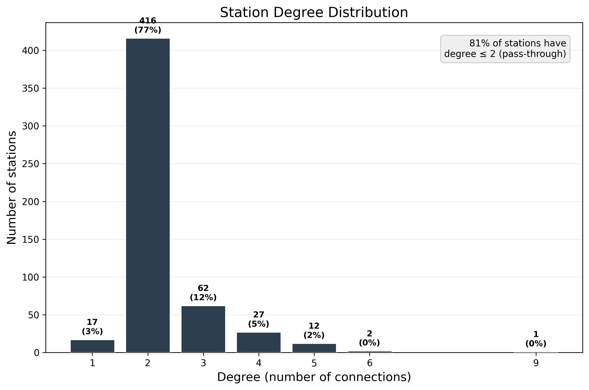
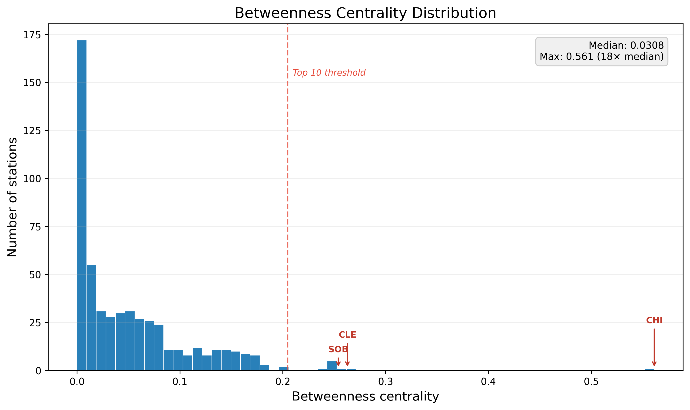
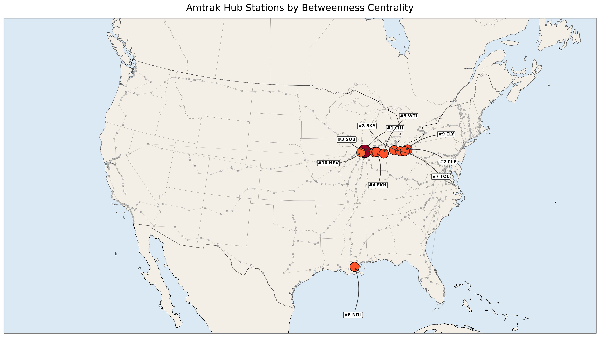
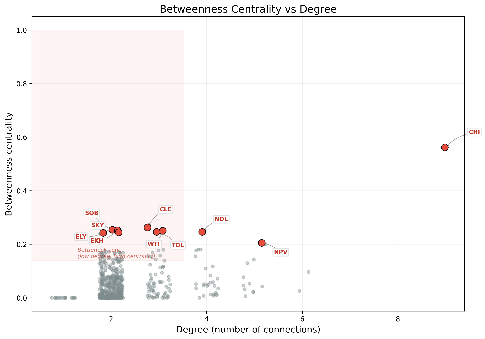
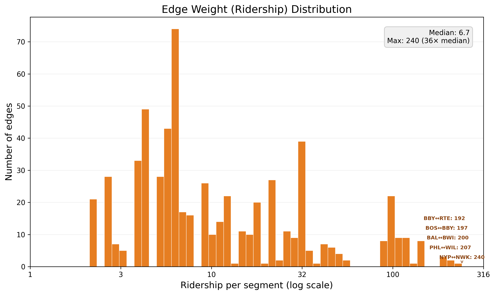

A network-theory analysis of structural vulnerabilities in the U.S. passenger rail system
The analysis is built on four data files that describe the Amtrak passenger rail network:
| File | Format | Contents |
|---|---|---|
station-data.xlsx | Excel | Station codes with longitude/latitude coordinates |
route-data.xlsx | Excel | Names of all Amtrak routes |
route-stop-data.txt | Plain text | Ordered list of station stops for each route |
ridership-data.txt | Plain text | Annual ridership figures for each route |
station-data.xlsx provides a row per station with three fields: a short alphanumeric Code (e.g. CHI for Chicago Union Station, NYP for New York Penn Station), and its geographic coordinates (lon, lat).
route-stop-data.txt lists each route by name followed by its stations in order. Each station line has the format City, State - Station Name (CODE). The three-letter code in parentheses links each stop to the station coordinate table.
ridership-data.txt provides a row per route with multiple ridership metrics. The fifth column (total annual ridership in thousands) is used as the route weight.
The Amtrak system is modeled as a weighted undirected graph where:
The resulting graph contains 537 stations and 612 edges, with a largest connected component of 523 stations (97.4% of the network).
Definition: Betweenness centrality measures how often a node lies on the shortest path between every other pair of nodes in the network. Formally, for a node $v$:
where $\sigma_{st}$ is the total number of shortest paths from node $s$ to node $t$, and $\sigma_{st}(v)$ is the number of those paths that pass through $v$. The value is normalized to the range $[0, 1]$.
Intuition: A station with high betweenness centrality is one that acts as a critical bridge — if you need to travel between many pairs of cities, your shortest route will pass through this station. Removing it forces passengers onto longer detours or severs connectivity entirely.
Why we chose it: Betweenness centrality directly captures a station's role as an interchange or bottleneck. Unlike degree (which only counts direct connections), betweenness reveals stations that control flow through the network — exactly what matters for vulnerability analysis.
Definition: The degree of a node is the number of edges connected to it — i.e., the number of other stations it has a direct rail link to.
Intuition: A degree-1 station is a terminus (end of the line). A degree-2 station is a simple pass-through. Stations with degree 3+ are junctions where multiple routes converge.
Definition: A connected component is a maximal subgroup of stations where every station can reach every other station via some path. The largest connected component is the biggest such group.
Intuition: If you remove a critical station and the network fractures, the largest connected component tells you how many stations can still communicate with each other. A drop in this number means parts of the network have been isolated.
Definition: The combined annual ridership (in thousands of passengers) flowing through a given track segment, summed across all routes that share that segment.
Intuition: High-weight edges represent the busiest corridors. Disruption to high-weight edges has the greatest direct impact on passenger volume.
Computed using NetworkX's betweenness_centrality() function over the full weighted graph. The algorithm considers edge weights when computing shortest paths (lower weight = shorter path), and normalizes scores to $[0, 1]$. All 537 stations receive a centrality score; we rank them and extract the top 10.
Starting from the intact network, we sequentially remove the station with the highest betweenness centrality, then the second-highest, and so on up to 10 removals. After each removal, we measure the size of the largest connected component. This simulates a worst-case coordinated attack on the network's most critical nodes.
For comparison, we repeat the removal process but select stations uniformly at random. Because random outcomes vary, we average the results over 100 independent trials. After each removal step (1 through 10), we record the mean largest-component size across all trials.
We count the degree of every station in the graph and tally how many stations have each degree value (1, 2, 3, …, 9).
We collect the ridership weight of all 612 edges and plot their distribution on a log scale to visualize the long tail from low-traffic rural segments to high-traffic urban corridors.
The top 10 stations by betweenness centrality are:
| Rank | Station Code | Betweenness Centrality | Degree | Role |
|---|---|---|---|---|
| 1 | CHI (Chicago Union Station) | 0.5614 | 9 | Primary national hub — highest centrality and highest degree |
| 2 | CLE (Cleveland) | 0.2629 | 3 | East–Midwest bridge |
| 3 | SOB (South Bend) | 0.2541 | 2 | Bottleneck on Chicago–East corridor |
| 4 | EKH (Elkhart, IN) | 0.2521 | 2 | Bottleneck on Chicago–East corridor |
| 5 | WTI (Waterloo, IN) | 0.2501 | 3 | Midwest junction |
| 6 | NOL (New Orleans) | 0.2463 | 4 | Southern hub — links Gulf Coast to eastern network |
| 7 | TOL (Toledo, OH) | 0.2462 | 3 | Ohio corridor bottleneck |
| 8 | SKY (Sandusky, OH) | 0.2442 | 2 | Bottleneck in Ohio corridor |
| 9 | ELY (Elyria, OH) | 0.2423 | 2 | Bottleneck in Ohio corridor |
| 10 | NPV (Naperville, IL) | 0.2047 | 5 | Chicago suburban junction |
The five busiest track segments by combined annual ridership (thousands):
| Rank | Segment | Ridership |
|---|---|---|
| 1 | NYP ↔ NWK (New York Penn ↔ Newark) | 240 |
| 2 | PHL ↔ WIL (Philadelphia ↔ Wilmington) | 207 |
| 3 | BAL ↔ BWI (Baltimore ↔ BWI Airport) | 200 |
| 4 | BOS ↔ BBY (Boston South Station ↔ Back Bay) | 197 |
| 5 | BBY ↔ RTE (Back Bay ↔ Route 128) | 192 |
All five are in the Northeast Corridor, carrying 36× the median ridership of 6.7.

What it shows: Two curves plotted against the number of stations removed (0–10). The red solid line shows what happens when stations are removed in order of betweenness centrality (targeted attack). The blue dashed line shows what happens when stations are removed randomly (averaged over 100 trials). The shaded pink region between them highlights the “vulnerability gap.” The right y-axis shows the percentage of the original network remaining.
Key observations:

What it shows: A bar chart showing how many stations have each degree value (1 through 9). Each bar is labeled with the count and percentage.
Key observations:

What it shows: A histogram of betweenness centrality across all 537 stations. The dashed vertical red line marks the top-10 threshold. The top 3 outliers (CHI, CLE, SOB) are individually labeled. An inset box reports the median and maximum values.
Key observations:

What it shows: A map of the continental United States with all 537 stations plotted as points. The top 10 hubs are shown as large circles sized and colored by centrality (darker red = higher centrality), with labeled leader lines showing rank and station code. All other stations appear as small grey dots. Edges are drawn with thickness proportional to ridership.
Key observations:

What it shows: A scatter plot with degree (number of connections) on the x-axis and betweenness centrality on the y-axis. Each station is a dot; the top 10 hubs are highlighted in red and labeled. A shaded pink region in the upper-left marks the “bottleneck zone” — stations with high centrality but low degree.
Key observations:

What it shows: A histogram of edge weights (ridership per segment) on a log scale. The five heaviest corridors are annotated on the right. An inset box reports the median and maximum weights.
Key observations:
Chicago controls 56% of the network's betweenness centrality — more than double any other station. It is the only station with degree 9, serving as the sole interchange between nearly all long-distance routes. Any disruption at Chicago (weather, infrastructure failure, labor action, security incident) effectively fragments the national network.
Removing 6 stations by centrality drops connectivity to 52%. Removing 10 random stations preserves ~92%. This 40-percentage-point gap is the hallmark of a scale-free network: robust against accidental failures, fragile against informed attacks.
Eight of the top 10 hubs lie in a tight geographic band from Chicago through Indiana and Ohio. A regional disruption (severe winter storm, Ohio River flooding, widespread power outage) could simultaneously disable multiple critical nodes and cause a network collapse far more severe than the sequential removal analysis suggests.
Stations like SOB, EKH, SKY, and ELY rank in the top 10 by centrality despite having only 2 connections each. Their importance comes entirely from topology — they sit on the only path between large sections of the network. This means they are fragile by design.
The degree distribution shows the network is composed of long linear chains tied together at a handful of interchange points. This means each route is essentially a single thread: any break in the thread isolates all stations beyond the break point.
The highest ridership (NYP↔NWK at 240, 36× median) is concentrated in the Northeast Corridor, which has mesh-like redundancy and no stations in the top 10 by centrality. The highest structural criticality is in the Midwest, which carries modest ridership. These are distinct vulnerabilities requiring different management strategies.
| Finding | Metric | Value | Implication |
|---|---|---|---|
| CHI dominance | Betweenness centrality | 0.561 (18× median) | Single point of failure for the national network |
| Targeted fragility | Component size after 6 removals | 52% of original | Coordinated attack on 6 stations halves the network |
| Random resilience | Component size after 10 removals | ~92% of original | Accidental station closures are low-risk |
| Linear topology | Stations with degree ≤ 2 | 81% (433 of 537) | Network is chains, not a mesh — inherently fragile |
| Midwest concentration | Top-10 hubs in Midwest | 8 of 10 | Regional event could disable multiple critical nodes |
| NEC ridership dominance | Top corridor ridership | 240 (36× median) | Revenue is concentrated where structure is resilient |
| Bottleneck pattern | Top-10 hubs with degree ≤ 3 | 7 of 10 | Criticality comes from topology, not connectivity |